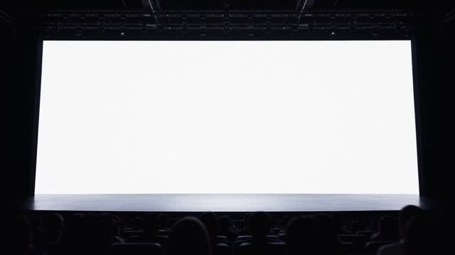
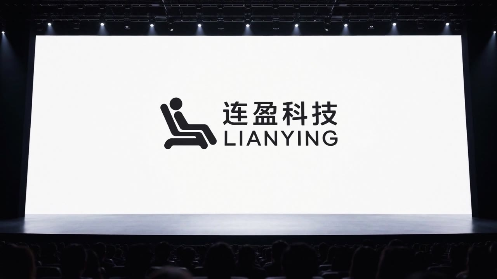
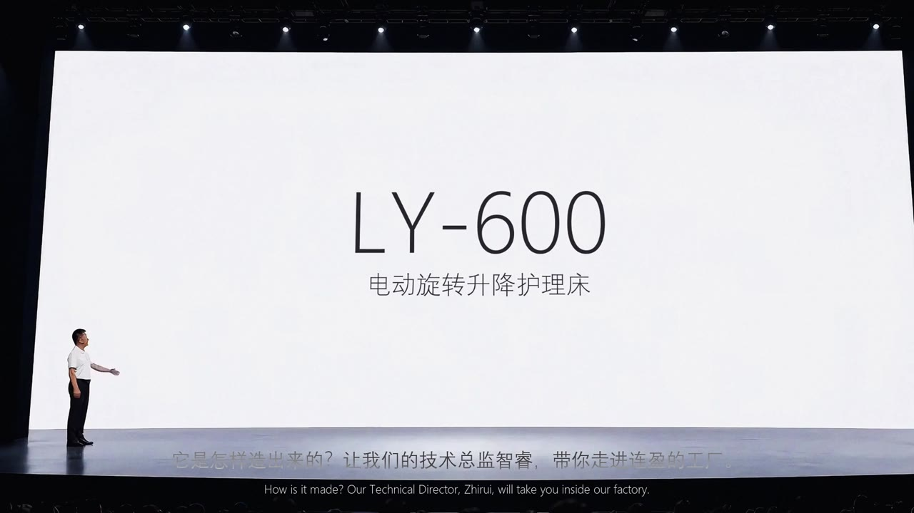
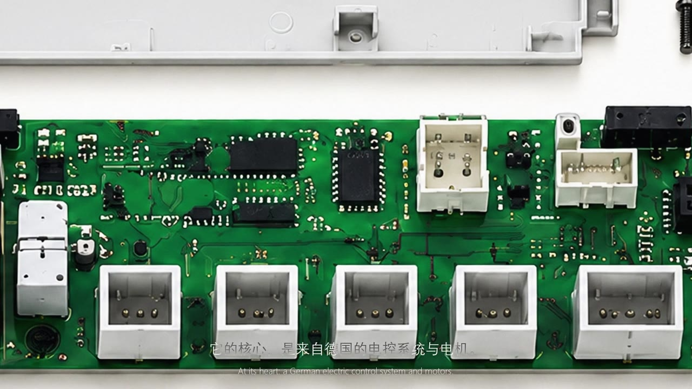
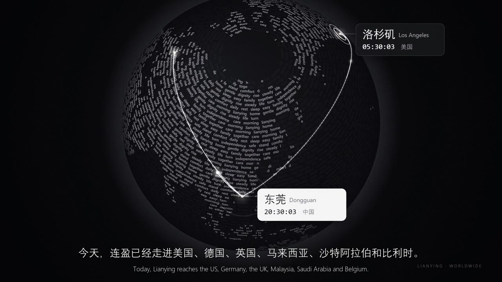

01 初衷
我认为很多传统企业的创始人、董事长，也可以学会讲故事
发布会不是科技公司的专属
01
老板第一人称
创始人站上舞台，讲发展历程、产品理念、技术、过往成绩，以及接下来的宏图。
02
一场正式的产品发布
有开灯揭幕的仪式感，让主打产品 LY-600 像新品一样被郑重地介绍出来。
03
骨干员工自述
企业的成功离不开人。技术总监讲制造，总设计师讲人文、关怀和温暖。

00:00我认为很多传统企业的创始人、董事长，也可以学会讲故事
发布会不是科技公司的专属
创始人站上舞台，讲发展历程、产品理念、技术、过往成绩，以及接下来的宏图。
有开灯揭幕的仪式感，让主打产品 LY-600 像新品一样被郑重地介绍出来。
企业的成功离不开人。技术总监讲制造，总设计师讲人文、关怀和温暖。
全片一句话：让起居不便的人，重新拥有独立的生活。技术段把节奏推到最高，人文段突然慢下来，从冷的钢铁走进暖的家。

第一幕 · 30 秒1997 年，从一张床开始。两万平方米的工厂，只专注一件事。
庄重
第二幕 · 28 秒光束照出床的轮廓，全屏亮起，LY-600 登场，零件合拢成一张床。
仪式感
第三幕 · 37 秒激光切割、机器人焊接、德国电控、170 公斤承重，快剪推拉，一直在动。
硬核一张床对一个人意味着什么？爷爷的一个早晨，自己坐起来，自己站起来。
温暖
第五幕 · 29 秒二十多年，从一间工厂到一个品牌。9 项专利，走进 6 个国家。
收束一张床，可以只是一张床
也可以是一个人，重新走向生活的起点
A bed can be just a bed. Or it can be where someone begins their way back to life.
不是坐在剪辑软件前一刀一刀剪，而是把整部片拆成任务：人定故事和审美，模型负责写、生成、用代码做画面、剪辑合成。
人给出构思、几幕、谁讲、想要的感觉和参考片；AI 写出每幕的时长、分镜、人物出场和中英对照文稿。大纲定了再往下走。
公司、行业、产品、员工、老板、声音六类素材，一个总文件夹按幕分好，生成物按编号命名。另建一份禁用清单，交付前逐帧扫描。
每人十几秒干净录音就能克隆。文稿逐句生成，每句一个文件，自带精确时长，剪辑和字幕都按它对齐；情绪和语速可调，讲话镜头放慢到约 0.85 倍。
缺的画面靠生图和图生视频补。人文故事先出角色定妆照，后面每个镜头都参考它；每个镜头一个文件夹，放首帧图和提示词，人逐个生成，稳定可控。
拍不到也生成不好的，让模型用代码写：零件合拢、专利墙、文字地球、企业历程、开灯揭幕。连电影滤镜、调色、字幕和响度统一，也都是代码写的。精确、可反复调，改一个参数就能重出。
每一幕独立脚本、一条命令重出，交付视频、台词时间表和说明。多个助手分头做，主导演派活、验收；内存和额度要统筹，大改前保留旧版本。
五幕拼接，加统一电影滤镜、中英字幕、统一响度和音乐。人看完给截图加时间点，AI 定位到对应镜头去改，一版一版往上提。
拍好的素材永远不够覆盖整部片，但它们是 AI 补画面时最重要的参考。
官网文字和视频、厂区环境、宣传册、资质证书、专利、过往与最新的成绩。
制造过程实拍：激光切割、机器人焊接、车间。制造业一定要讲技术，这是国内的强项。
主打产品的参数、渲染图、分层爆炸图、展厅实拍的升降和起背。
技术总监、总设计师的白底真人特写视频，多拍几段，换几种状态。
创始人的照片和舞台背景素材，用来生成上台、挥手、介绍产品的镜头。
每位出场人物 10–20 秒录音，安静环境，用来克隆声音。
每一轮看完，截图加时间点给出意见，再改。一两次大改，其余都是微改。
结构推翻重来：从「露脸讲几句」改成苹果发布会式五幕，讲述人全程旁白，画面撑起故事。
修视频细节：画面发白、抠像边缘、字幕看不清、配音响度、画面黑点、重复镜头。
加开灯揭幕；技术段改成三星堆式快剪；结尾换成那句话；全片统一电影滤镜。
开头空白推镜、交棒镜头一路推到底、射灯随轮廓收光，基本定稿。
这次跑通的流程，整理成了「keynote 发布会 skill」。换一家企业、换一个产品，Claude 会按同样的五幕和三个拍板节点做下去，审美仍然由你来定。
~/.claude/skills/keynote-launch-film人定故事和审美，
模型把它做出来